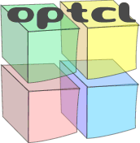

In order to precisely describe the interface and (in some cases!) the functionality of a COM object, COM defines a language independant mechanism for describing types, called Type Libraries. You can think of these as a machine readable superset of header files. Using Type Libraries, the interfaces (more about these later), methods, events and properties of an object can be accurrately described.
Having this kind of information is very important as it can a) allow for the accurate type conversion between Tcl objects and COM types, and b) speed up an invocation on an object.
Optcl is now type library aware - at least in terms of reading them and being type sensitive in its invocations. I hope a future version will be able to write out Type Libraries.
In OpTcl, types are represented as a strings comprising of the programmatic name for a type library and its contained typename, joined using a dot. So for example, stdole.IFontDisp is the IFontDisp type defined in the library called stdole.
The only exception to the formatting rule specified above are primitive. These are always a single word with no '.' delimiter. They are listed in the following table:
| Type | Description | Type | Description |
| char | A single character | string | single byte string |
| uchar | An unsigned character | carray | C-style array - not currently supported |
| short | 16 bit signed integer | decimal | 96-bit number |
| ushort | 16 bit unsigned integer | float | 32 bit real number |
| long | 32 bit signed integer | double | 64 bit real number |
| ulong | 32 bit unsigned integer | dispatch | Scriptable interface to an object |
| bool | boolean | interface | Non-scriptable interface to an object |
| date | Date type. | currency | Currency. Range: ±922337203685477.5807 |
| any | A variant type. |
Copyright (c) 1999, Farzad Pezeshkpour